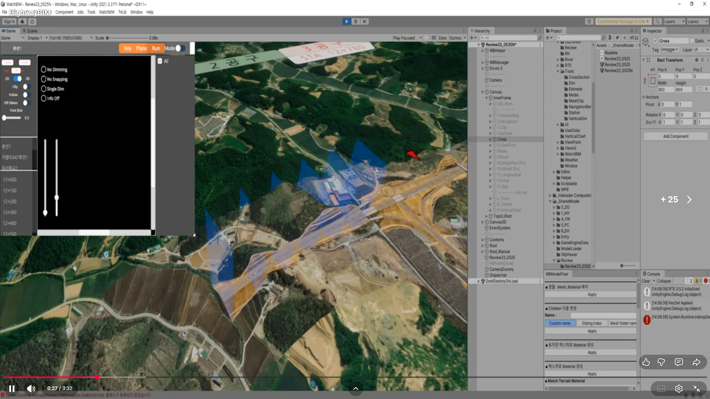

// 01 · hit engine
커스텀 히트 엔진
대용량 BIM 모델에서 운영자 픽킹·hover·선택을 안정적으로. 표준 Unity Raycast 가 못 다루는 케이스를 직접 처리.
unity bim runtime · custom hit engine · cross-section · 2d viewer
대용량 BIM 상호작용, 단면 생성, 2D 분석 뷰어, 커스텀 카메라 시스템을 자체 설계한 Unity BIM 런타임. 외부 BIM 도구가 못 다루는 운영 요구(런타임 단면 생성·실시간 분석·툴 카메라)를 직접 구현한 사례.

대용량 BIM 모델에서 운영자 픽킹·hover·선택을 안정적으로. 표준 Unity Raycast 가 못 다루는 케이스를 직접 처리.

런타임에서 임의 평면으로 단면 생성. 단면 결과를 하이라이트해서 운영자가 직관적으로 확인.

단면 결과를 별도 2D 뷰어에서 측정·분석. 3D 와 2D 뷰가 같은 데이터 모델 위에 연동.

고도·구조 분포를 수직 그래프로 분석. 운영자가 한눈에 패턴을 잡을 수 있는 형태.